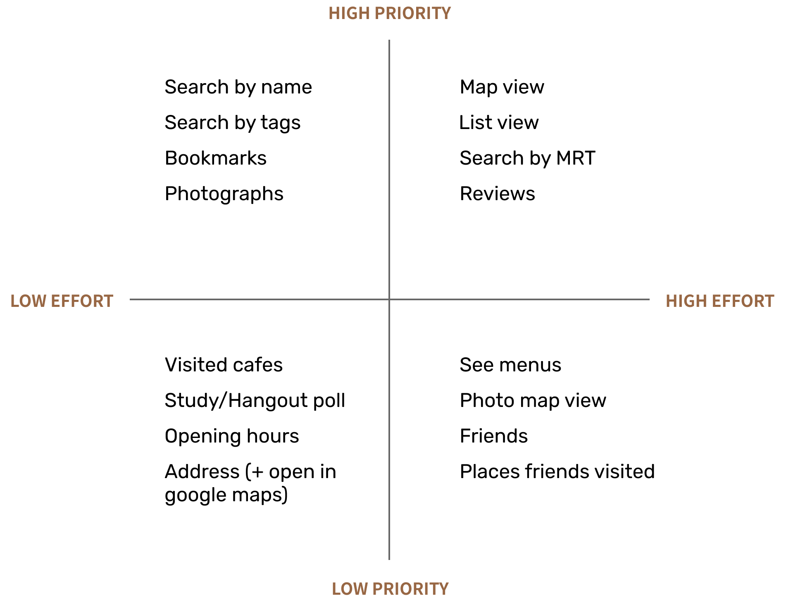
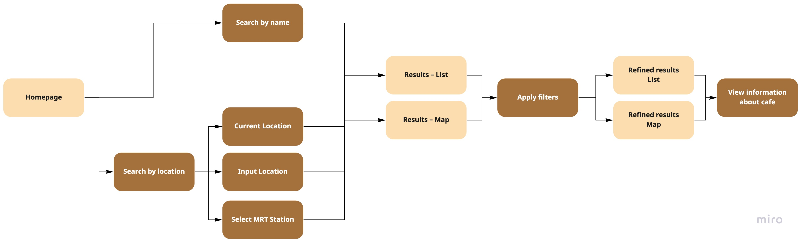

Ideation
Prioritization mapping
Since the goal at the current stage is to create a minimum viable product, I came up with a list of features and functionalities that are either present in other similar application or requested/mentioned by interview participants. I then sort them into a prioritization map to clarify the direction and scope of the product.

User flows and wireframing
Creating a user flow map was very helpful for me to plan the user experience. I created this while keeping the design goal in mind: efficient searching and discovery
